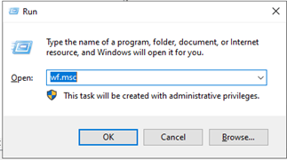
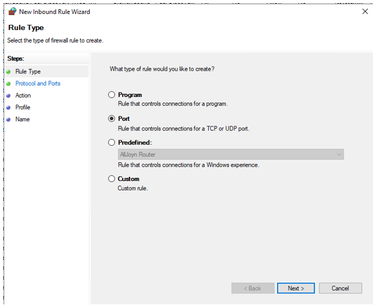
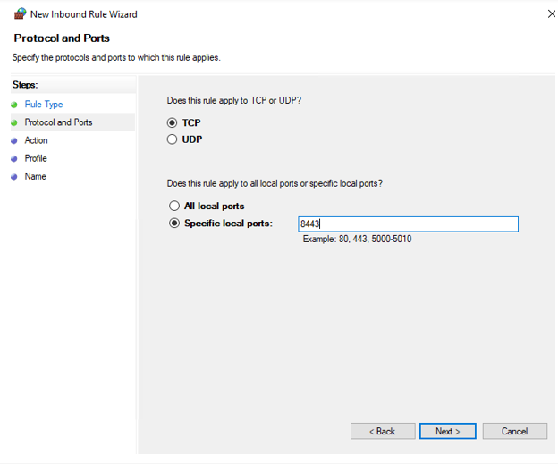
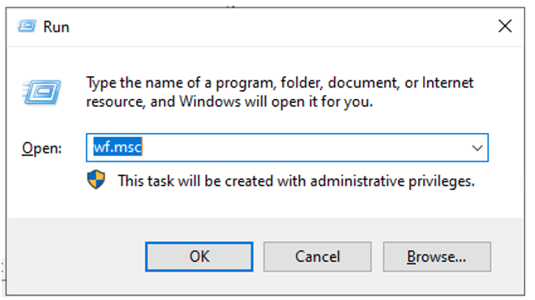
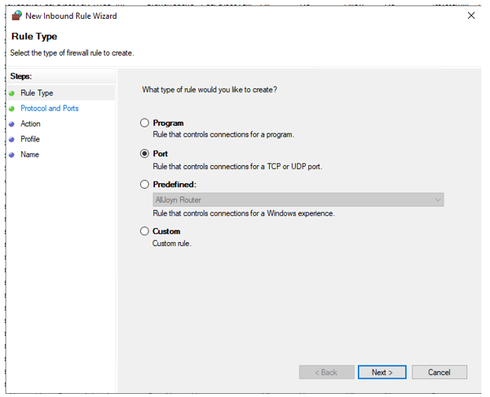
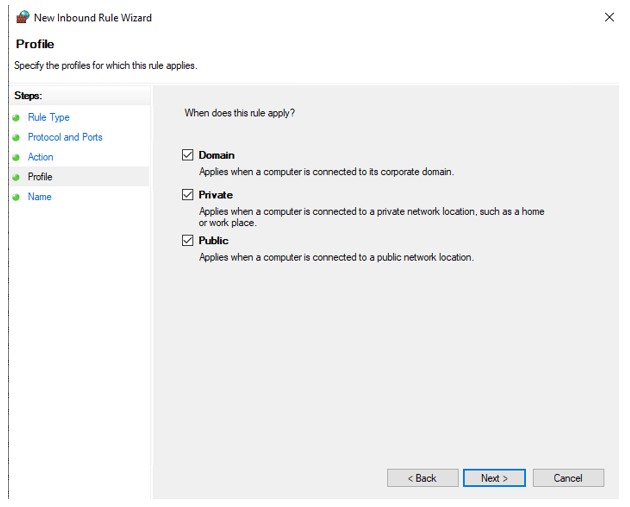

ข้อมูลระบบเบื้องต้น
ระบบ Custodian เป็นระบบสำหรับรับฝากและเก็บรักษาหลักทรัพย์ รวมถึงบริการด้านหลักทรัพย์อื่นๆ เช่น ถอน โอน รับโอน จำนำ อายัด เป็นต้น รวมถึง รองรับการเปิดบัญชีหลักทรัพย์ พิมพ์สมุดผู้ฝากพันธบัตรรัฐบาล(พันธบัตรออมทรัพย์) เพื่อให้บริการผู้รับฝากหลักทรัพย์ โดยผู้ใช้งานในระบบ แบ่งเป็น 2 กลุ่มคือ
-
• เข้าใช้งานระบบผ่าน Browser สำหรับพิมพ์สมุดผู้ฝากพันธบัตรรัฐบาลและ ธุรกรรมต่างๆ (สาขา และ
ฝ่ายธุรกิจการเงินส่วนบุคคล)
• เข้าใช้งานผ่าน Windows Application เพื่อทำการปิดสิ้นวัน รวมถึงการรวบรวมข้อมูลส่งต่อไปยัง TSD (ศูนย์รับฝากหลักทรัพย์) โดย ฝ่ายปฏิบัติการลงทุน และฝ่ายธุรกิจการลงทุน
Environment variable บนเครื่องกลุ่ม custodian service
- Client

- Proxy Server
- Application Server
- Database Server
- Branch
Firewall Port ส่วนที่เกี่ยวกับ Application
Directory structure และ Permission
User และ Group สำหรับ SIT Environment
SIT Environment
User และ Group สำหรับ UAT Environment
UAT Environment
User และ Group สำหรับ Production Environment
Production Environment

ขั้นตอนการสร้างกฎ Inbound Rule บนพอร์ต 8443 Proxy Server
1. เปิด Windows Defender Firewall with Advanced Security :
- a. กด Win + R เพื่อเปิดหน้าต่าง Run
b. พิมพ์คำสั่ง wf.msc แล้วกด Enter
-
c. หน้าต่าง Windows Defender Firewall with Advanced Security จะเปิดขึ้น
2. เลือก Inbound Rules :
- a. ในแถบเมนูทางด้านซ้าย ให้เลือก Inbound Rules (กฎสำหรับการรับข้อมูลขาเข้า)
3. สร้างกฎใหม่ :
- a. ในเมนูทางขวามือ ให้คลิกที่ New Rule... เพื่อเริ่มสร้างกฎใหม
4. เลือกประเภทของกฎเป็น Port :
- a. ในหน้าต่าง New Inbound Rule Wizard ให้เลือกประเภทของกฎเป็น Port จากนั้นคลิก Next

5. เลือกโปรโตคอลและกำหนดพอร์ต :
- a. เลือก TCP (โปรโตคอลที่ Traefik ใช้)
b. ในช่อง Specific local ports ให้พิมพ์หมายเลขพอร์ต 8443 จากนั้นคลิก Next
6. เลือก Allow the connection :
- a. เลือก Allow the connection เพื่ออนุญาตการรับข้อมูลบนพอร์ตนี้ จากนั้นคลิก Next
7. เลือก Profile :
- a. เลือก Profile ที่คุณต้องการให้กฎนี้มีผล เช่น :
b. Domain: สำหรับเครือข่ายโดเมน
c. Private: สำหรับเครือข่ายส่วนตัว
d. Public: สำหรับเครือข่ายสาธารณะ
e. เลือกโปรไฟล์ที่ต้องการแล้วคลิก Next

8. ตั้งชื่อกฎเป็น "Traefik" :
- a. ในช่อง Name ให้ตั้งชื่อกฎเป็น Traefik
b. ในช่อง Description คุณสามารถระบุคำอธิบายเพิ่มเติมได้ (ไม่จำเป็นต้องกรอกก็ได้)
c. คลิก Finish เพื่อบันทึกกฎ
ติดตั้ง Pre-config สำหรับ traefik
copy folder conf จาก package supporting_software\deploy\proxy\traefik วางที่ $TRAEFIK_HOME ซึ่ง มี config ที่สำคัญดังนี้
$TRAEFIK_HOME\service\WinSW-X64.xml
$TRAEFIK_HOME\conf\mssql.toml
$TRAEFIK_HOME\conf\web.toml
การ config certificate
ใช้ cert ที่มีการขอ register name ที่ DNS เป็น intraWebCustodianSIT.gsb และ intraWebCustodianUAT.gsb ที่ธนาคาร generate ให้ supporting_software\cert
- - intraWebCustodianSIT.gsb.cer
- intraWebCustodianSIT.gsb.p12
- intraWebCustodianUAT.gsb.cer
- intraWebCustodianUAT.gsb.p12
จะต้องมีการแปลง .p12 เป็น .key (เนื่องจาก traefik ต้องการ key ที่ไม่มีการระบุ passphrase จึงต้อง export ออกมาใหม่ด้วยคำสั่ง
## Generate server private key file server.key
openssl pkcs12 -in <<.p12 file name>> -nocerts -nodes -out <<.key file>>
โดยใช้ program openssl ใน supporting_software\util\OpenSSL-1.1.1h_win32 เช่น
openssl pkcs12 -in intraWebCustodianSIT.gsb.p12 -nocerts -nodes -out intraWebCustodianSIT.gsb.key
copy file .cer และ .key วางที่ $TRAEFIK_HOME/cert ตรวจสอบ file web.toml ส่วน ระบุ path ของ certificate แบบ full path
config firewall ของเครื่อง Application Server
การสร้าง Inbound Rule บนพอร์ต 8443 Application Server
-
เปิด Windows Defender Firewall with Advanced Security :
- a. กด Win + R เพื่อเปิดหน้าต่าง Run
b. พิมพ์คำสั่ง wf.msc แล้วกด Enter
 c. หน้าต่าง Windows Defender Firewall with Advanced Security จะเปิดขึ้น -
เลือก Inbound Rules :
- a. ในแถบเมนูทางด้านซ้าย ให้เลือก Inbound Rules (กฎสำหรับการรับข้อมูลขาเข้า)
- สร้างกฎใหม่ :
-
เลือกประเภทของกฎเป็น Port :
-
a. ในหน้าต่าง New Inbound Rule Wizard ให้เลือกประเภทของกฎเป็น Port จากนั้นคลิก Next
 - เลือกโปรโตคอลและกำหนดพอร์ต :
-
a. เลือก TCP (โปรโตคอลที่ Tomcat ใช้)
b. ในช่อง Specific local ports ให้พิมพ์หมายเลขพอร์ต 8443 จากนั้นคลิก Next - เลือก Allow the connection :
- a. เลือก Allow the connection เพื่ออนุญาตการรับข้อมูลบนพอร์ตนี้ จากนั้นคลิก Next
- เลือก Profile :
-
a. เลือก Profile ที่คุณต้องการให้กฎนี้มีผล เช่น :
b. Domain: สำหรับเครือข่ายโดเมน
c. Private: สำหรับเครือข่ายส่วนตัว
d. Public: สำหรับเครือข่ายสาธารณะ
e. เลือกโปรไฟล์ที่ต้องการแล้วคลิก Next
- ตั้งชื่อกฎเป็น "Tomcat" :
- a. ในช่อง Name ให้ตั้งชื่อกฎเป็น Tomcat
b. ในช่อง Description คุณสามารถระบุคำอธิบายเพิ่มเติมได้ (ไม่จำเป็นต้องกรอกก็ได้)
c. คลิก Finish เพื่อบันทึกกฎ -
เปิด Windows Defender Firewall with Advanced Security :
-
a. กด Win + R เพื่อเปิดหน้าต่าง Run
b. พิมพ์คำสั่ง wf.msc แล้วกด Enter
c. หน้าต่าง Windows Defender Firewall with Advanced Security จะเปิดขึ้น - เลือก Inbound Rules :
-
a. ในแถบเมนูทางด้านซ้าย ให้เลือก Inbound Rules (กฎสำหรับการรับข้อมูลขาเข้า)
- สร้างกฎใหม่ :
-
a. ในเมนูทางขวามือ ให้คลิกที่ New Rule... เพื่อเริ่มสร้างกฎใหม่
- เลือกประเภทของกฎเป็น Port :
-
a. ในหน้าต่าง New Inbound Rule Wizard ให้เลือกประเภทของกฎเป็น Port จากนั้นคลิก Next
 - เลือกโปรโตคอลและกำหนดพอร์ต :
-
a. เลือก TCP (โปรโตคอลที่ webapi ใช้)
b. ในช่อง Specific local ports ให้พิมพ์หมายเลขพอร์ต 10456 จากนั้นคลิก Next

- เลือก Allow the connection :
-
a. เลือก Allow the connection เพื่ออนุญาตการรับข้อมูลบนพอร์ตนี้ จากนั้นคลิก Next
- เลือก Profile :
-
a. เลือก Profile ที่คุณต้องการให้กฎนี้มีผล เช่น :
b. Domain: สำหรับเครือข่ายโดเมน
c. Private: สำหรับเครือข่ายส่วนตัว
d. Public: สำหรับเครือข่ายสาธารณะ
e. เลือกโปรไฟล์ที่ต้องการแล้วคลิก Next -
ตั้งชื่อกฎเป็น "Bonanza webapi" :
-
a. ในช่อง Name ให้ตั้งชื่อกฎเป็น Bonanza webapi
b. ในช่อง Description คุณสามารถระบุคำอธิบายเพิ่มเติมได้ (ไม่จำเป็นต้องกรอกก็ได้)
c. คลิก Finish เพื่อบันทึกกฎ
- a. ในเมนูทางขวามือ ให้คลิกที่ New Rule... เพื่อเริ่มสร้างกฎใหม่
การสร้าง Inbound Rule บนพอร์ต 10456 Application Server
1. Setting Up .NET 7 (Latest Version)
To set up .NET 7, follow these steps:
- Visit the official .NET 7 download page.
- Select the version that matches your operating system (Windows, macOS, or Linux).
- Download the installer for your OS and run it.The installer will automatically install the .NET SDK and runtime.
- Verify the installation by opening a terminal/command prompt and typing
dotnet --version. You should see the .NET 7 version number.
2. Setting Up .NET 6 (LTS Version)
For long-term support (LTS), .NET 6 is a stable choice. Follow these steps to set it up:
- Go to the official .NET 6 download page.
- Select the appropriate version for your operating system and download the installer.
- Run the installer and follow the instructions. .NET 6 will be installed, including the .NET SDK and runtime.
- Once the installation is complete, open a terminal or command prompt and type
dotnet --versionto confirm the installation of .NET 6.
3. Setting Up .NET 5
If you are working with legacy projects or require .NET 5, follow these steps:
- Visit the official .NET 5 download page.
- Choose the version corresponding to your OS (Windows, macOS, Linux) and download it.
- Run the installer and follow the prompts to install .NET 5 on your system.
- Once installation is complete, verify it by typing
dotnet --versionin your terminal or command prompt.
4. Setting Up .NET Core 3.1
For applications targeting .NET Core 3.1, which is still widely used in production, you can follow these steps:
- Go to the official .NET Core 3.1 download page.
- Select the version that corresponds to your OS and download the installer.
- Run the downloaded installer to install .NET Core 3.1, including the SDK and runtime.
- Confirm the installation by typing
dotnet --versionin your terminal or command prompt. You should see the .NET Core version number.
5. Setting Up .NET Framework
If you are working on a project that uses the .NET Framework (primarily for Windows applications), you need to install it separately from the .NET SDK:
- Visit the official .NET Framework download page.
- Select the version of .NET Framework required for your project.
- Download the installer and follow the instructions to install the framework on your machine.
- Note that .NET Framework is only supported on Windows, and you may need to install specific versions based on your application’s requirements.
6. Verify Your Installation
dotnet --version
Getting Started with .NET
Once you’ve installed .NET, create a new project using the dotnet new command, and start
building your application right away.
Profile
Your profile contains personal information such as your name, email, and preferences. You can update your details at any time.
Settings
Manage your account settings such as notification preferences, privacy settings, and security options like two-factor authentication (2FA).
Sign Out
To sign out of your account, click the "Sign Out" option in the account menu. This will log you out securely.